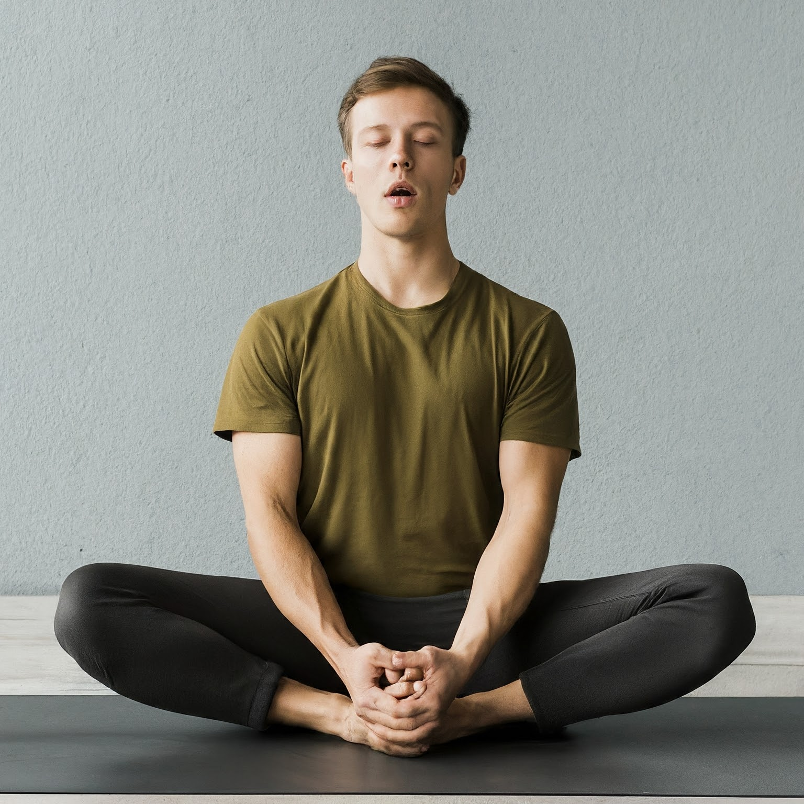

Understanding Arthritis from a Yogic Perspective
Arthritis, in the yogic tradition, is perceived as an imbalance in the body's energy flow, leading to inflammation and discomfort in the joints. It is believed that disturbances in the flow of prana (life force energy) and accumulated toxins contribute to the manifestation of arthritis symptoms.
Understanding Arthritis in Yogic Terms
In yoga philosophy, the body is viewed as a holistic system, and arthritis is seen as a disruption in this system. It can result from various factors, including poor dietary habits, sedentary lifestyle, and emotional stress, which affect the balance of the doshas (bio-energies) and compromise joint health.
Yogic Approaches to Managing Arthritis
Yoga offers gentle yet effective methods for managing arthritis by promoting flexibility, strength, and relaxation. Here are some yogic practices that can help:
-
Gentle Asana Practice: Gentle yoga poses, such as Tadasana (Mountain Pose) and Vrikshasana (Tree Pose), promote joint mobility, improve circulation, and reduce stiffness in the affected areas.
-
Pranayama (Breath Control): Pranayama techniques, such as Kapalabhati (Skull Shining Breath) and Anulom Vilom (Alternate Nostril Breathing), enhance oxygenation, reduce inflammation, and alleviate pain.

-
Mindfulness and Meditation: Mindfulness practices, such as body scanning and loving-kindness meditation, cultivate awareness, promote acceptance of discomfort, and foster emotional well-being.
.jpg)
-
Yogic Lifestyle: Adopting a yogic lifestyle, characterized by balanced nutrition, regular physical activity, adequate rest, and stress management, supports joint health and overall vitality.